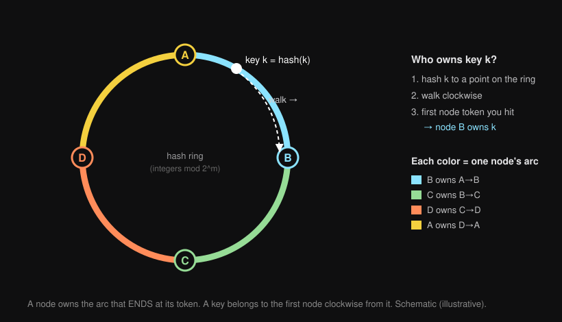
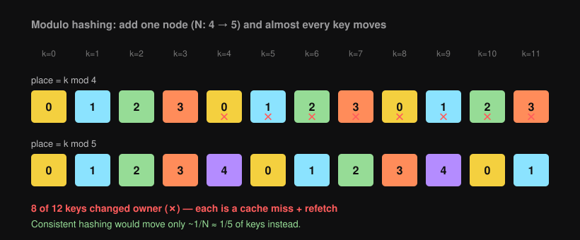
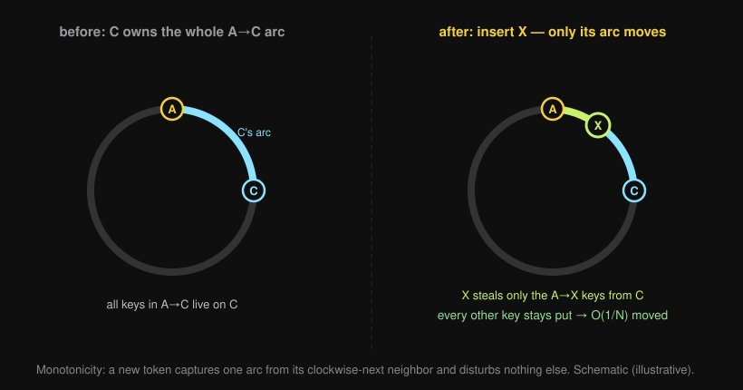

What this deck explains
We are reading a short, dense article titled "Consistent Hashing for Distributed Caches." It is written in a terse, paper-like voice and assumes you already know hashing, partitioning, and cache mechanics. This deck unpacks it from scratch for someone who has seen hash tables once and nothing more.
The article's one-sentence claim:
h(k) mod N) falls apart the moment you add or remove a machine — it moves almost every key. Consistent hashing fixes this: a membership change moves only about 1/N of the keys.How to read this deck
Slides 2–7 are a vocabulary primer (hash function, keyspace, modulo hashing, cache miss, the hash ring). Slides 8+ walk the article section by section, with the math done out and diagrams. Select any text and ask a question if a step is unclear.
Hash function: turn any key into a number
A hash function h takes a key (a string, an id, anything) and returns a number in a large fixed range, e.g. 0 to 232−1. Two properties matter here:
- Deterministic — the same key always hashes to the same number.
- Uniform — different keys spread roughly evenly across the range, with no clustering.
h("user:42") = 3_915_028_771, h("user:43") = 88_201_544. Adjacent-looking keys land far apart — that is what "uniform" buys you.Keyspace + partitioning across N nodes
The keyspace is the set of all possible keys. A distributed cache is several machines (nodes) that together hold the cached values; no single node holds everything. Partitioning (a.k.a. sharding) is the rule that decides which node owns which key.
A placement function place(k) maps each key to exactly one node. Good partitioning wants two things at once:
| Goal | Means |
|---|---|
| Balanced | each node owns ~1/N of the keys (no node overloaded) |
| Stable | when N changes, as few keys as possible change owner |
Modulo hashing: the obvious scheme
The simplest placement: hash the key, take the remainder by N.
place(k) = h(k) mod N
N = 4 nodes (0,1,2,3)
h("user:42") = 3_915_028_771
3_915_028_771 mod 4 = 3 → node 3 owns "user:42"
Because h is uniform, mod N hands each node about 1/N of the keys. So modulo hashing is balanced — and that is why it is the first thing everyone reaches for.
N is baked into every key's location, so changing N relocates everything (see slide 8).Cache miss, refetch, thundering herd
A cache hit is when the value is already on the node you asked — fast. A cache miss is when it is not: the node must refetch from the slow origin (the database) and store it ("warm" the cache).
If a key changes owner, the new owner has never seen it → guaranteed miss → refetch. If many keys change owner at once, a flood of refetches hits the origin simultaneously. That flood is a thundering herd, and it can knock the database over.
The hash ring — the core mental model
Instead of a line of N slots, imagine the hash range bent into a circle (the integers mod 2m). Both keys and nodes are hashed onto this same ring.
- Each node's hash is its token — its position on the ring.
- To place a key: hash it to a point, then walk clockwise until you hit the first node token. That node owns the key.

k walks clockwise to the first token, B, so B owns it. Schematic (illustrative)- Toptal: Consistent Hashing · Blog — the classic illustrated walk-through of the ring.
- Hussein Nasser: Consistent Hashing · YouTube — whiteboard explanation of the ring + vnodes.
Load variance — "balanced on average" isn't enough
"Each node owns ~1/N of keys in expectation" is an average. The variance is how far real nodes stray from that average. A useful measure is the coefficient of variation = standard deviation ÷ mean: smaller means the nodes' loads are tightly bunched around the average.
Why modulo hashing breaks on a membership change
The article's first move: show that modulo hashing, despite being balanced, is catastrophically unstable. When N becomes N+1, the divisor changes, so h(k) mod N and h(k) mod (N+1) disagree for almost every key.

k mod 4 (top) vs k mod 5 (bottom). The ✗ keys changed owner — 8 of 12 here. As N grows the fraction approaches N/(N+1). Schematic (illustrative)How bad? About N/(N+1) of all keys move
Let's do the article's claim explicitly. A key keeps its owner only if h(k) mod N == h(k) mod (N+1). For a uniformly random hash, the fraction of keys where the two remainders coincide is only about 1/(N+1). So the fraction that moves is:
fraction moved ≈ 1 − 1/(N+1) = N/(N+1) N = 4 → 4/5 = 80% of keys move N = 9 → 9/10 = 90% N = 99 → 99/100 = 99%
The bigger your cluster, the worse it gets — exactly backwards from what you want.
What we actually want: balanced + monotone
The article names the target precisely. We want a placement function that is:
- Balanced — each node still owns ~1/N of keys.
- Monotone — adding or removing a node moves only the keys that must move to or from that node, and leaves every other key exactly where it was.
Monotonicity is the new word. It is the formal version of "don't disturb keys that have nothing to do with the change."
The ring construction, restated precisely
From slide 6: hash nodes and keys onto the same circle; a key's owner is the first node clockwise. Said in arc terms: each node owns the arc that ends at its token — the keys between its counter-clockwise neighbor's token and its own.
ring (clockwise): … ─ nodeA ─[arc owned by B]─ nodeB ─[owned by C]─ nodeC ─ … key k lands in the A→B arc ⇒ owner = B
That is the whole data structure: a sorted set of tokens. Lookup = "find the next token clockwise from h(k)", an O(log N) search.
Add a node → only one arc moves
Insert a new node X by hashing it to a token on the ring. X lands inside some existing arc — say the arc currently owned by C. X now owns the sub-arc from its counter-clockwise neighbor up to X; the rest still belongs to C.

Remove a node → its arc merges into one neighbor
Removing a node deletes its token. The keys it owned have to go somewhere — they fall to the next node clockwise, because that is now the first token those keys reach. Every other arc is unchanged.
A — B — C — D: the keys that were on C now land on D (the next clockwise). A's and B's keys never move.The payoff: O(1/N) remap instead of N/(N+1)
Put the two halves together:
| Modulo hashing | Consistent hashing (ring) | |
|---|---|---|
| Balanced? | yes | yes (on average) |
| Keys moved on ±1 node | ≈ N/(N+1) (almost all) | ≈ 1/N (one arc) |
| Lookup cost | O(1) | O(log N) |
We traded an O(1) modulo for an O(log N) ring search, and in return a membership change went from "reshuffle everything" to "move one arc."
One token per node is too lumpy
Back to slide 7's worry. With one random token per node, the arcs are random lengths. The largest arc among N random tokens is about (log N)/N in expectation — so some unlucky node can own several times the average number of keys.
4 nodes, one token each — arcs might be: A: 15% B: 42% C: 11% D: 32% mean is 25%, but B owns 42% — a hot node by accident
Virtual nodes: give each machine many small tokens
Instead of one token per physical node, hash each node to V tokens — e.g. hash "nodeA#0", "nodeA#1", … "nodeA#V−1". The ring now has N·V tokens, and a physical node owns the union of its V scattered arcs.
Averaging V independent arcs shrinks the coefficient of variation by a factor of √V:
V = 1 → loads swing wildly V = 100 → √100 = 10× tighter → within a few % of the mean V = 200 → tighter still
Bonus: heterogeneous capacity
A machine with twice the memory? Give it twice as many tokens. Capacity becomes "how many tokens you get."
- System Design: Consistent Hashing & virtual nodes · YouTube — why V≈150 is a common default.
- AWS: data partitioning · Docs — vnodes in a real cache product.
Replication: store each key on R distinct nodes
One owner per key means that node failing loses its whole arc. Replication factor R stores each key on the next R distinct physical nodes found by continuing the clockwise walk past the first owner.
The subtlety is "distinct physical": because of virtual nodes, the next few tokens clockwise might all belong to the same machine. So you walk and skip — keep going until you have collected R different machines.
clockwise from k: tokenB(=nodeB) tokenB2(=nodeB) tokenC(=nodeC) tokenA(=nodeA) R = 3 owners → B, then skip B's duplicate, then C, then A
The catch: it balances keys, not requests
Everything so far balances how many keys each node owns. But traffic is rarely uniform — a handful of hot keys (a viral post, a celebrity profile) can absorb most of the requests. The node owning a hot key is overloaded no matter how evenly keys are spread.
Two fixes for hot keys
The article composes two mitigations:
- Replicate hot keys wider and let clients pick a replica at random — read load for that key spreads across more machines.
- Bounded-load assignment — cap each node at
(1 + ε)× the average load. When the clockwise walk reaches a node already at its cap, skip to the next one.
ε = 0.25 → no node may exceed 1.25× average load walk clockwise … node at cap? → keep walking to the next
Rendezvous (HRW) hashing — same goal, different shape
The ring is not the only monotone scheme. Rendezvous hashing (Highest Random Weight) skips tokens entirely: to place key k, compute a combined hash w(k, node) for every node and pick the node with the highest weight.
| Ring (consistent hashing) | Rendezvous (HRW) | |
|---|---|---|
| State | sorted token set (+ vnodes) | none — just node ids |
| Lookup | O(log N) search | O(N) hashes per key |
| Variance | needs vnodes to be even | low without vnodes |
| Replica ranking | walk-and-skip | free — just sort the weights |
Both are monotone: adding a node only wins the keys where it is now the max; removing one only re-races its own keys.
The whole argument on one slide
modulo hashing balanced, but ±1 node moves ≈ N/(N+1) of keys ✗
│
▼ put nodes + keys on a ring, own the arc to your token
consistent hashing monotone: ±1 node moves only ≈ 1/N ✓
│
├─ virtual nodes → many tokens/node → even load + heterogeneity
├─ replication → first R distinct nodes clockwise → availability
└─ bounded load → cap (1+ε)× average → hotspots tamed
rendezvous (HRW) same monotonicity via a per-node weight race
Recap + where to go next
One line to remember
"Hash nodes and keys onto one ring; own the arc up to your token — so a membership change only moves one arc, not the whole keyspace."
If you build one thing
Implement the ring as a sorted map of token → node, hash each node to ~150 vnodes, and make place(k) a "ceiling" lookup that wraps around. You will have a balanced, monotone partitioner in ~40 lines.
- Karger et al. (1997): the original consistent hashing paper · Paper — where the ring + hotspot idea began.
- Hussein Nasser: Consistent Hashing · YouTube — a clear video recap of everything above.